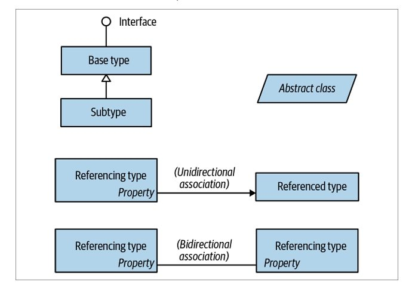

پیشگفتار
سیشارپ ۱۲ نهمین بهروزرسانی بزرگ برای زبان برنامهنویسی اصلی مایکروسافت است؛ زبانی که حالا انعطافپذیری و گستردگی فوقالعادهای پیدا کرده است. سیشارپ از یک طرف قابلیتهای سطح بالایی مثل query expressions و متدهای ناهمگام (async) را در اختیارتان میگذارد، و از طرف دیگر با ابزارهای سطح پایینی مثل custom value typeها و پوینترها (pointers)، اجازه میدهد به بالاترین کارایی و سرعت در اجرای کدها برسید.
البته تاوان این رشد سریع این است که حالا مباحث خیلی بیشتری برای یادگیری پیش روی شماست. هرچند ابزارهایی مثل IntelliSense مایکروسافت یا جستجو در وب هنگام کدنویسی کمک بزرگی هستند، اما همهٔ آنها فرض میکنند که شما از قبل یک نقشهٔ ذهنی و تسلط مفهومی روی موضوعات دارید. هدف این کتاب دقیقاً همین است: فراهم کردن این نقشهٔ راه مفهومی در قالب متنی منسجم، خلاصه و به دور از حاشیهها و مقدمهچینیهای طولانی.
مثل هفت ویرایش قبلی، کتاب C# 12 in a Nutshell بر اساس مفاهیم اصلی و سناریوهای کاربردی مرتب شده است؛ به همین دلیل هم برای مطالعهٔ پیوسته و فصلبهفصل عالی است و هم برای مراجعه سریع به یک موضوع خاص هنگام کار. این کتاب بدون اینکه پیشنیازهای سنگین از شما بخواهد، وارد عمق مباحث میشود و برای برنامهنویسان سطح متوسط و حرفهای کاملاً کاربردی است.
تمرکز اصلی این اثر روی سه رکن اساسی است:
- زبان سیشارپ
- محیط زمان اجرای زبان مشترک (
CLR) - کتابخانه کلاسهای پایه در داتنت ۸ (
BCL)
ما این گستره را انتخاب کردیم تا بتوانیم مباحث سخت و عمیق را بدون شلوغی متن و با خوانایی بالا توضیح دهیم. همچنین ویژگیهای جدیدی که به تازگی به زبان اضافه شدهاند در متن علامتگذاری شدهاند تا اگر هنوز از سیشارپ ۱۰ یا ۱۱ استفاده میکنید، همچنان بتوانید از این کتاب به عنوان یک مرجع مطمئن بهره ببرید.
مخاطبان کتاب
این کتاب برای توسعهدهندگان سطح متوسط تا پیشرفته نوشته شده است. نیازی نیست قبلاً با سیشارپ کار کرده باشید، اما داشتن تجربهٔ برنامهنویسی عمومی لازم است. اگر در برنامهنویسی تازهکار هستید، این کتاب جایگزین دورههای آموزشی مقدماتی نیست، بلکه یک مکمل قوی در کنار آنهاست.
این کتاب همراهی فوقالعاده در کنار کتابهایی است که روی یک فناوری خاص مثل ASP.NET Core یا WPF تمرکز دارند؛ چون دقیقاً همان بخشهایی از زبان و داتنت را پوشش میدهد که در کتابهای پروژهمحور از آنها صرفنظر شده است (و برعکس).
نکته: اگر دنبال کتابی هستید که صرفاً نگاهی سریع و گذرا به تمام ابزارهای داتنت بیندازد، این کتاب مناسب شما نیست. همچنین اگر هدفتان یادگیری APIهای اختصاصی اپلیکیشنهای موبایل است، این اثر آنها را پوشش نمیدهد.
ساختار و سرفصلهای کتاب
مباحث کتاب به شکل هدفمند بخشبندی شدهاند:
- فصلهای ۲ تا ۴: کاملاً روی خود زبان سیشارپ تمرکز دارند؛ از مبانی سینتکس، انواع داده و متغیرها شروع میشوند و تا موضوعات پیشرفتهتری مثل کدهای ناامن (
unsafe code) و دستورات پیشپردازنده ادامه مییابند. اگر در سیشارپ تازهوارد هستید، این سه فصل را حتماً به ترتیب بخوانید. - سایر فصلها: روی کتابخانههای اصلی داتنت ۸ متمرکز هستند و مباحث کاربردی زیر را بررسی میکنند:
- پرسوجوی دادهها با
LINQ - کار با فایلهای
XMLوJSON - کالکشنها و ساختمانهای داده (
Collections) - همزمانی، برنامهنویسی ناهمگام و مدیریت تردها (
Concurrency) - ورودی/خروجی فایل و شبکه (
I/O & Networking) - مدیریت حافظه و Garbage Collection
- بازتاب (
Reflection) و برنامهنویسی داینامیک - اتریبیوتها (
Attributes)، رمزنگاری و امنیت - ارتباط با کدهای سیستمی و غیbalanceیرداتنتی (
Native Interoperability)
- پرسوجوی دادهها با
بیشتر این فصلها را میتوانید جداگانه و بر اساس نیاز کاریتان مطالعه کنید؛ به جز فصلهای ۵ و ۶ که پایهای برای فهم مباحث بعدی هستند. همچنین پیشنهاد میکنیم سه فصل مربوط به LINQ را پشت سر هم بخوانید. برای درک بهتر برخی از فصلها نیز به مبانی همزمانی نیاز دارید که به صورت کامل در فصل ۱۴ بررسی شده است.
ابزارها و نیازمندیها
برای اجرای کدهای این کتاب به .NET 8 نیاز دارید. همچنین داکیومنت آنلاین مایکروسافت بهترین مرجع برای جستجوی اعضا و متدهای هر کلاس است.
هرچند میتوانید کدها را در یک ویرایشگر ساده بنویسید و با ترمینال اجرا کنید، اما استفاده از ابزارهای زیر سرعت و راحتی کارتان را چند برابر میکند:
- محیط تست سریع قطعهکد (ویندوز): نرمافزار سبک و رایگان LINQPad 8 را از سایت www.linqpad.net دانلود کنید. این برنامه هماهنگی کاملی با سیشارپ ۱۲ دارد و توسط نویسندهٔ همین کتاب (جوزف آلباهاری) توسعه داده میشود.
- محیط توسعه IDE (ویندوز): نرمافزار Visual Studio 2022 (حتی ویرایش رایگان Community هم برای تمام کدهای کتاب کافی است).
- محیط توسعه چندسکویی (Cross-platform): ویرایشگر محبوب Visual Studio Code.
نکته کاربردی: تمامی نمونهکدهای کتاب به صورت کدهای تعاملی و قابل ویرایش در نرمافزار LINQPad آماده شدهاند. برای دریافت یکجای آنها کافی است در گوشه پایین سمت چپ برنامه LINQPad، روی تب Samples کلیک کنید، گزینه Download more samples را بزنید و سپس عنوان C# 12 in a Nutshell را انتخاب کنید.
قراردادهای نگارشی کتاب
در این کتاب برای نشان دادن رابطهٔ بین کلاسها و تایپها، از نمودارهای استاندارد UML استفاده شده است (مطابق تصویر زیر):
- مستطیل کج (ایتالیک): کلاس انتزاعی یا ابسترکت (
abstract class) - دایره: اینترفیس (
interface) - خط با مثلث توخالی: ارثبری (
inheritance) که جهت مثلث به سمت کلاس پایه است - خط با فلش: ارتباط یکطرفه بین دو کلاس
- خط بدون فلش: ارتباط دوطرفه بین دو کلاس

همچنین قراردادهای فونت و نگارش زیر در طول کتاب رعایت شده است:
- متن کج (Italic): برای اصطلاحات جدید، آدرس سایتها، نام فایلها و پوشهها.
فونت تکفاصله (Constant width): برای کدهای سیشارپ، کلمات کلیدی، نام متغیرها و خروجی اجرای برنامهها.فونت تکفاصله پررنگ (Bold): برای برجسته کردن بخش خاصی از یک قطعهکد.فونت تکفاصله کج (Italic): برای مقادیری که باید توسط خودتان با مقدار دلخواه جایگزین شوند.
ضوابط استفاده از نمونهکدها
کدهای نمونه، تمرینها و منابع جانبی کتاب در سایت albahari.com/nutshell برای دانلود قرار دارند.
هدف این کتاب کمک به پیشبرد پروژههای شماست. به طور کلی، استفاده از کدهای این کتاب در برنامهها و مستندات کاری شما آزاد است و نیازی به گرفتن اجازه ندارید؛ مگر در مواردی که بخواهید حجم بسیار زیادی از کدهای کتاب را بازنشر کنید:
- استفاده از تکهکدهای کتاب در نرمافزار یا پروژههای شخصی و کاری شما کاملاً آزاد است.
- فروش یا بازتوزیع مستقیم مثالهای کتابهای انتشارات O'Reilly نیاز به کسب اجازه دارد.
- پاسخ دادن به سوالات فنی دیگران با نقل چند خط کد از این کتاب مجاز است (ذکر نام کتاب مایه خوشحالی ماست).
- گنجاندن بخش عمدهای از کدهای کتاب در داکیومنت رسمی یک محصول تجاری نیاز به هماهنگی با ناشر دارد.
برای ذکر منبع، میتوانید از این متن استاندارد استفاده کنید:
“C# 12 in a Nutshell by Joseph Albahari (O’Reilly). Copyright 2024 Joseph Albahari, 978-1-098-14744-0.”
اگر سوالی درباره حقوق نشر کدهای کتاب دارید، میتوانید با ایمیل permissions@oreilly.com در ارتباط باشید.
راههای ارتباط با ناشر
دیدگاهها و سوالات خود درباره کتاب را میتوانید با انتشارات مطرح کنید:
- ناشر: O’Reilly Media, Inc.
- صفحه رسمی کتاب (شامل اصلاحیهها و آخرین آپدیتها): oreil.ly/c-sharp-nutshell-12
- وبسایت اختصاصی مؤلف: www.albahari.com/nutshell
- ایمیل پشتیبانی:
support@oreilly.com
تشکر و قدردانی
جوزف آلباهاری:
از زمان انتشار ویرایش اول در سال ۲۰۰۷، این کتاب همواره به بررسیهای فنی دقیق جمعی از متخصصان برجسته تکیه داشته است. برای بازبینی ویرایشهای اخیر، تشکر ویژهای دارم از:
همچنین از دوستان و متخصصانی که در ویرایشهای قبلی نقشی اساسی داشتند، صمیمانه قدردانی میکنم:
بسیاری از بازبینهای فنی این کتاب از نخبگان و مهندسان ارشد مایکروسافت هستند و از اینکه وقت باارزش خود را برای ارتقای کیفیت این کتاب صرف کردند بینهایت سپاسگزارم.
همچنین از بن آلباهاری (Ben Albahari) و اریک یوهانسن (Eric Johannsen) که در ویرایشهای قبلی مشارکت داشتند، و تیم انتشارات O'Reilly — به ویژه ویراستار دقیق و پرانرژیام، کُربین کالینز (Corbin Collins) — تشکر میکنم. در پایان، صمیمانهترین تشکرم را نثار همسر مهربانم، لی آلباهاری (Li Albahari)، میکنم که همراهی و آرامش او در تمام طول این پروژه، انگیزه و شادیبخش من بود.